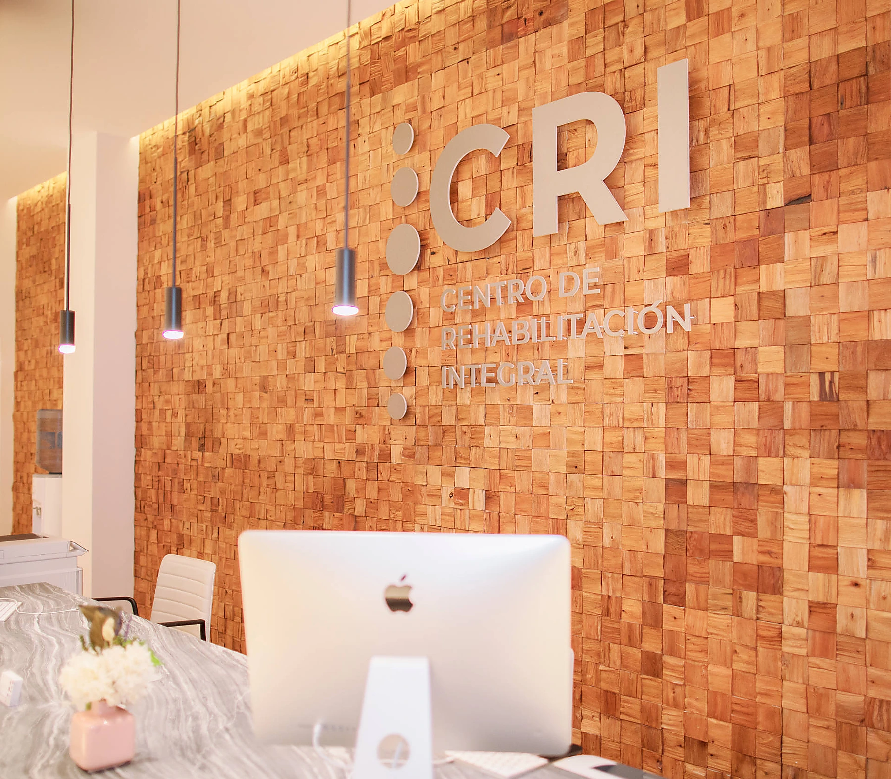
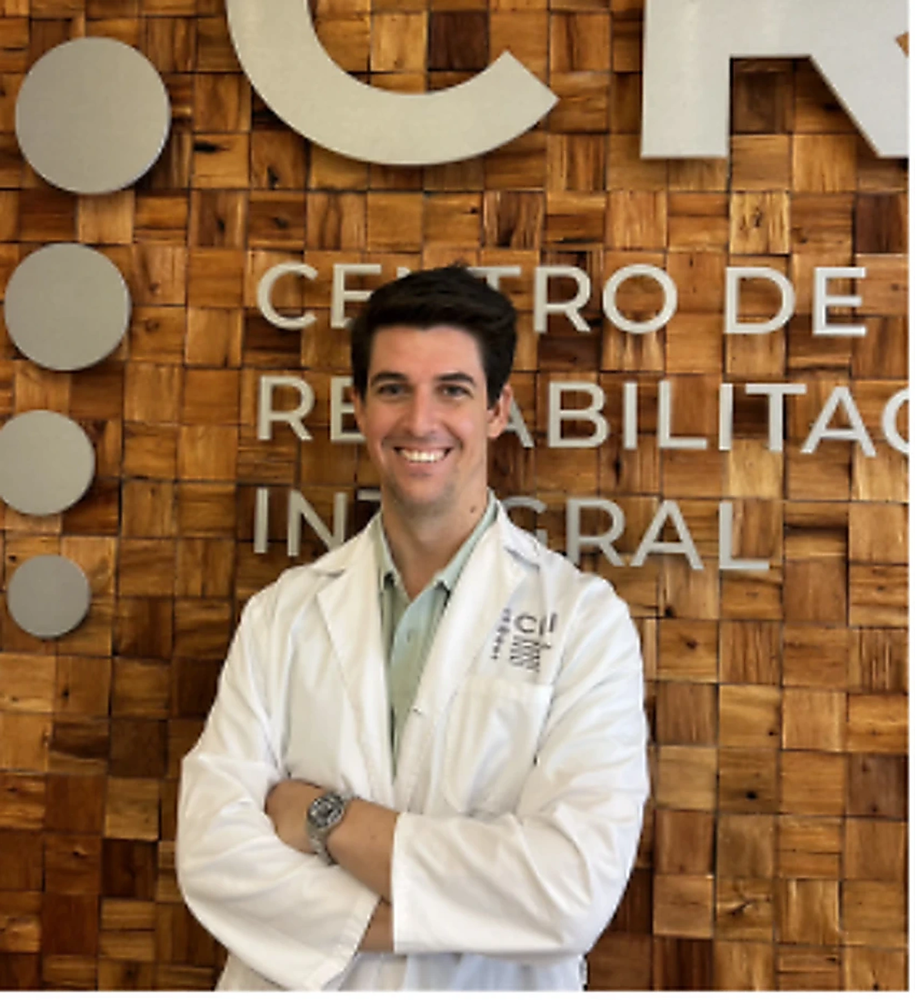
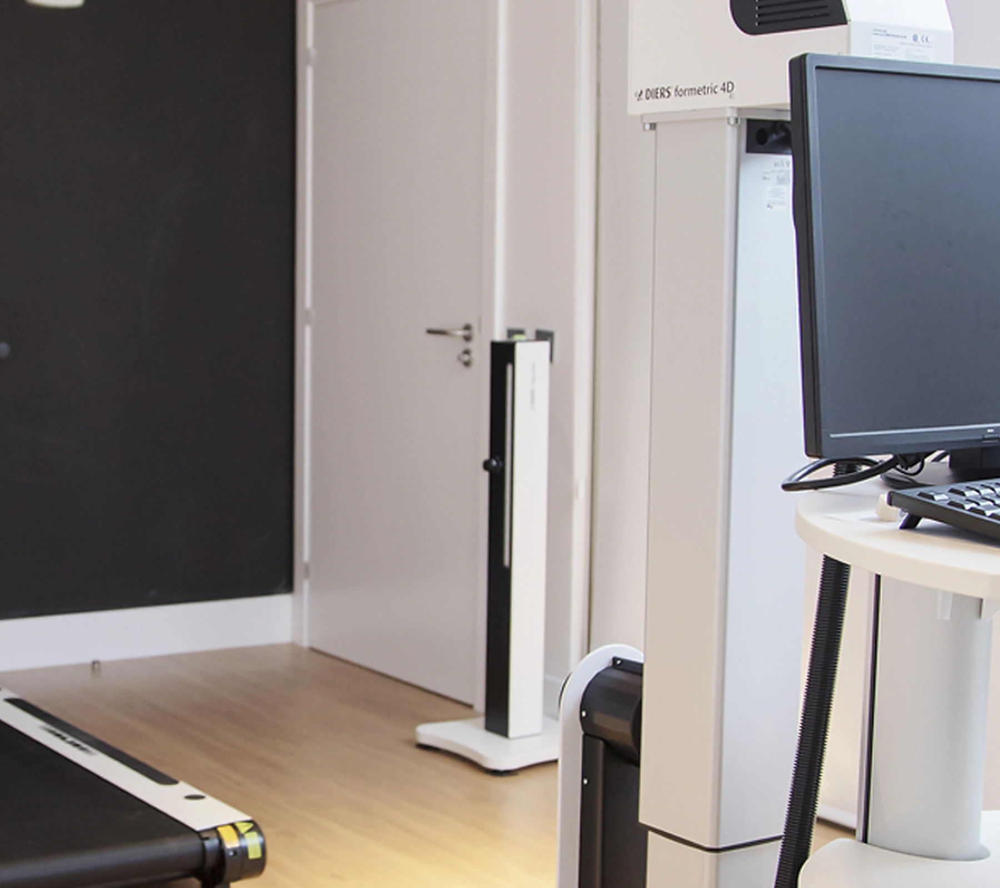
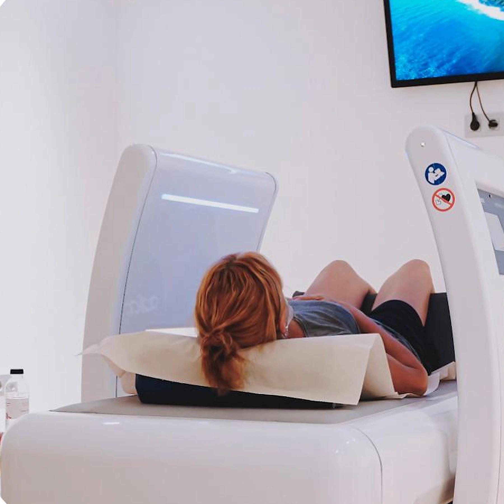
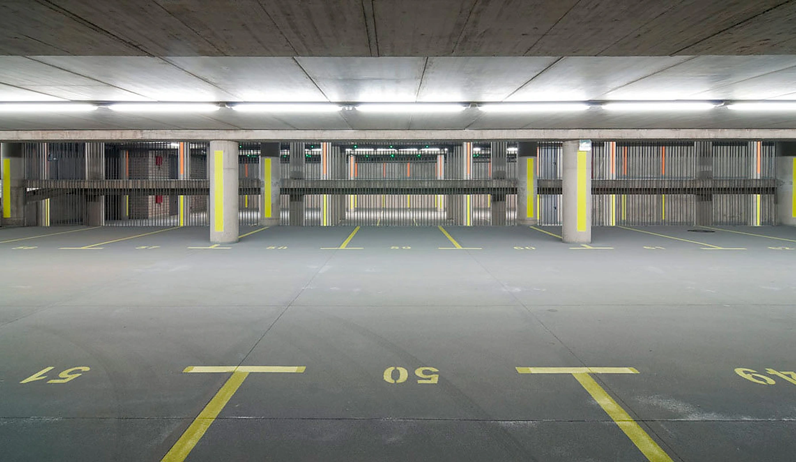

Fisioterapia
Fisioterapia avanzada
Terapia manual, ejercicio terapéutico, fisioterapia invasiva y readaptación.
Ver servicios →Un equipo multidisciplinar, diagnóstico preciso y tecnología avanzada para construir un plan de recuperación realmente adaptado a ti.
En CRI conectamos la valoración médica, la fisioterapia y la tecnología para tomar mejores decisiones desde la primera visita.
Identificamos el origen del problema, tus objetivos y las barreras que frenan tu progreso.
Definimos contigo un tratamiento realista, comprensible y revisable.
Ajustamos el plan según tu evolución, no según una receta estándar.

Desde una lesión reciente hasta un dolor persistente, te acompañamos con el profesional y la tecnología adecuados para cada fase.
Terapia manual, ejercicio terapéutico, fisioterapia invasiva y readaptación.
Ver servicios →
Traumatología, rehabilitación, reumatología, neurocirugía y unidad del dolor.
Conocer especialidades →
Equipos avanzados para analizar, tratar y seguir la evolución de cada paciente.
Explorar tecnología →La tecnología amplía lo que podemos observar y tratar. La utilizamos cuando aporta valor al diagnóstico, al tratamiento o al seguimiento.

Los pacientes con tratamientos programados de una hora o más disponen de una hora de parking gratuito en el Hotel Mencey, a pocos minutos del centro.
Hotel Mencey
Calle Dr. José Naveiras, 38 · Santa Cruz de Tenerife

Te orientamos hacia la especialidad y el profesional más adecuados para tu caso.